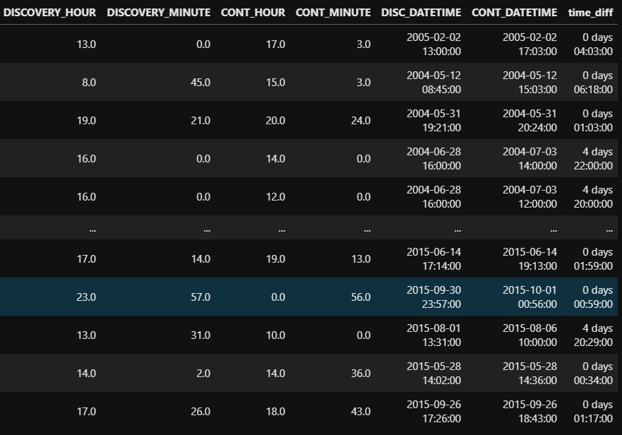
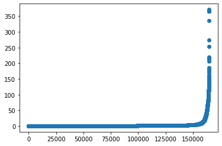
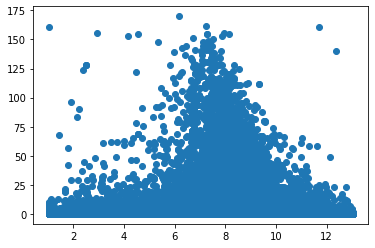
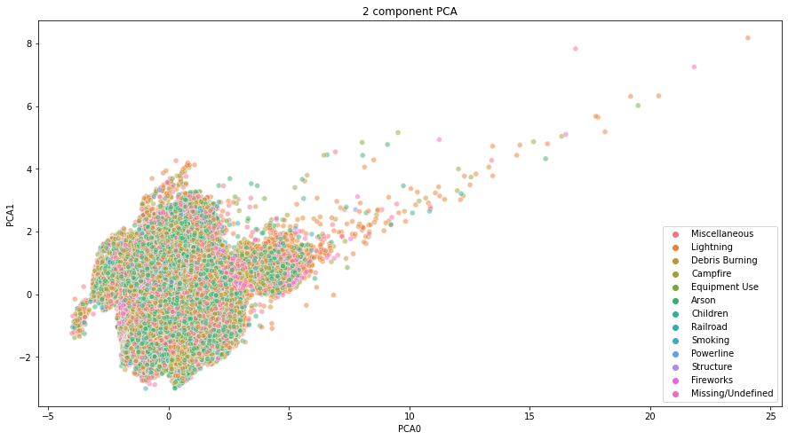
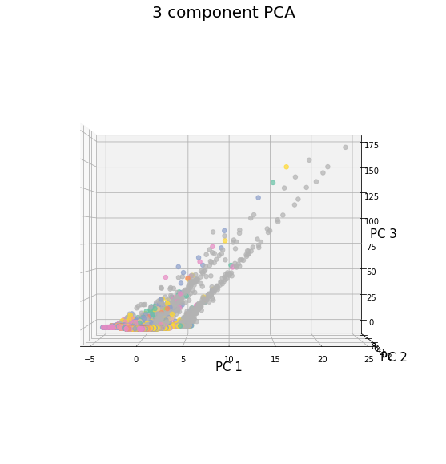
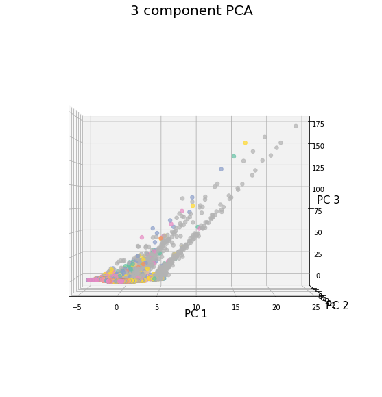
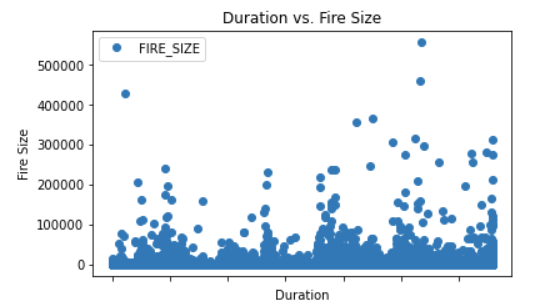

CS4641 Project 25
Wildfires
Introduction / Background
For the past couple of weeks, wildfires have been running rampant in the west coast , causing tremendous amounts of damage to forestland, wildlife, and property. Although wildfires burn every year, the ones this year have been more destructive than those in the past, even causing states to declare states of emergency and evacuate people from their homes. So far in 2020, there were around 44.5 thousand wildfires in the US which burned around 7.5 million acres of land (Facts Statistics: Wildfires 2020). There is a great need for wildfire prediction, wildfire detection, and spread prediction.
Problem Definition
Knowing the destructive nature of fires by humans (e.g. Prestemon et al. 2002; Mercer and Prestemon 2005; Prestemon and Butry 2005; Mercer et al. 2007; Prestemon et al. 2013) most prevalent within areas throughout the West Coast and MidWest we seek to ameliorate the potential occurrence of wildfires through the usage of machine learning and advanced data visualization techniques. This would involve predicting areas of high risk areas prone to unmitigatable fires, constantly adding in new data in order to create predictive and proactive options for fire detection, and finally creating an environment where spread prediction can also be observed and create data-driven actionable steps to defend populations.
Methods
We will use Principal Component Analysis (PCA) to reduce the dimensionality of variables in our kaggle wildfires dataset, allowing us to determine which features accurately represent our data. We will test a few different methods with both the PCA-reduced and raw dataset. To predict the spread of a fire based on other variables, like duration, location, and cause of the wildfire, we will use supervised learning methods like linear regression, neural nets, decision trees, and/or SVM. We will randomly select training and testing data for each year in our dataset. We may also perform time series forecasting to predict differences in wildfires over the years.
Potential Results
We expect to be able to predict areas at high-risk to fires as a result of our methods, as well as generate a predictable spread of any given fire. These can be visually mapped on a heat map with a time slider that would serve as a good way to visualize our results. In addition, we could also factor in elements such as potential property damage and city preparedness to the model. We expect the PCA to do well to identify key factors contributing to the spread of wildfires, and that a CNN will do a good job with predicting a path of spread. However, other supervised learning methods may also perform well.
Discussion
Being able to predict the location and intensity of wildfires and detect where they are quickly and how they will spread would allow people to contain them and greatly minimize potential damages and costs. It would also allow people to take appropriate steps to evacuate and avoid dangerous areas before the wildfires grow in intensity. We imagine that some potential difficulties we will face is that the data that the model ingests may not be complete or accurate enough to dynamically predict wildfires at the granularity that we desire or consider effective due to feeding live data into existing models (e.g. Salehi et al. 2016.)
Process
Cleansing the Data
When we first received the file we received the data in approximately 1.8 million rows with 28 columns that denoted many attributes of the fires that were good to know at a high level but proved to be redundant if not distracting from the primary variables that we actually wanted. Instead, we utilized a data viewer in order to determine a smaller subset of data that would prove to be more conducive to further application of machine learning principles that we have listed below.
FOD_ID = Global unique identifier.
FPA_ID = Unique identifier that contains information necessary to track back to the original record in the source dataset.
FIRE_CODE = Code used within the interagency wildland fire community to track and compile cost information for emergency fire suppression (https://www.firecode.gov/).
FIRE_NAME = Name of the incident, from the fire report (primary) or ICS-209 report (secondary).
FIRE_YEAR = Calendar year in which the fire was discovered or confirmed to exist.
DISCOVERY_DATE = Date on which the fire was discovered or confirmed to exist.
DISCOVERY_DOY = Day of year on which the fire was discovered or confirmed to exist.
DISCOVERY_TIME = Time of day that the fire was discovered or confirmed to exist.
STATCAUSECODE = Code for the (statistical) cause of the fire.
STATCAUSEDESCR = Description of the (statistical) cause of the fire.
CONT_DATE = Date on which the fire was declared contained or otherwise controlled (mm/dd/yyyy where mm=month, dd=day, and yyyy=year).
CONT_DOY = Day of year on which the fire was declared contained or otherwise controlled.
CONT_TIME = Time of day that the fire was declared contained or otherwise controlled (hhmm where hh=hour, mm=minutes).
FIRE_SIZE = Estimate of acres within the final perimeter of the fire.
FIRESIZECLASS = Code for fire size based on the number of acres within the final fire perimeter expenditures (A=greater than 0 but less than or equal to 0.25 acres, B=0.26-9.9 acres, C=10.0-99.9 acres, D=100-299 acres, E=300 to 999 acres, F=1000 to 4999 acres, and G=5000+ acres).
LATITUDE = Latitude (NAD83) for point location of the fire (decimal degrees).
LONGITUDE = Longitude (NAD83) for point location of the fire (decimal degrees).
STATE = Two-letter alphabetic code for the state in which the fire burned (or originated), based on the nominal designation in the fire report.
COUNTY = County, or equivalent, in which the fire burned (or originated), based on nominal designation in the fire report.
Data Preprocessing
Below is some preprocessing code we used to format our data properly. First, we were able to convert our dates Julian dates to Gregorian dates, which are much more comprehensible. This was a complex process that involved reading in the data and applying custom pandas datetime function in order to convert the main dates into Gregorian dates. However, the next step was then to find a way to combine a string representation of time with a datetime object. We accomplished this by utilizing the datetime.todelta() function which was able to accept a integer representation of hours and minutes which we were able to extract from the string time representation through a bespoke lambda function. We were then able to df.fillna() any empty spaces in order to prevent the iterrows() function from erroring when converting dates and embedding them in a new column at scale for the 1 million rows we had left. Finally, the duration of the fire is a simple subtraction from the datetime representation of discovery of the fire to the datetime representation date that it was contained.
for index_label, row_series in data.iterrows():
data.at[index_label , 'DISC_DATETIME'] = row_series['DISC_DATE']\
+ dt.timedelta(hours=int(row_series['DISCOVERY_HOUR']),minutes=int(row_series['DISCOVERY_MINUTE']))
data.at[index_label , 'CONT_DATETIME'] = row_series['CONTAIN_DATE']\
+ dt.timedelta(hours=int(row_series['CONT_HOUR']),minutes=int(row_series['CONT_MINUTE']))
data['time_diff'] = data['CONT_DATETIME']-data['DISC_DATETIME']
The above code produces a final dataframe that includes the combined datetime objects as well as a column denoting the final differences in between the discovery and contain date.

Searching for outliers and creating new features
Using the dataset, we can create features that may provide more information to us. We can extract the month, date, and year of each fire from our conver Julian dates. The other preprocessing code simply formats the state and cause features properly.
#Preprocessing
fires['MONTH']=pd.DatetimeIndex(fires['DISC_DATE']).month
fires['DAY']=pd.DatetimeIndex(fires['DISC_DATE']).day
fires['YEAR']=pd.DatetimeIndex(fires['DISC_DATE']).year
le = preprocessing.LabelEncoder()
fires['STAT_CAUSE_DESCR'] = le.fit_transform(fires['STAT_CAUSE_DESCR'])
fires['STATE'] = le.fit_transform(fires['STATE'])
Another nice touch we'll add is removing all data points will NaN values since sparse data is going to give us a headache.
data = data.dropna()Next, let's comb through some of our features and make sure everything's in order. First, let's look at the latitude and longitude plot of the fires to make sure nothing is amiss.

Wow! Look at that - the latitude and longitude points make a map of the US, a pleasant surprise. Unsurprisingly, the top half of alaska is missing - it's probably too cold there haha. But wait, why are there some points on the map in bottom left (middle of the ocean)? Could these be errors in input? Actually, after looking up those points, they seem to be the coordinates in Puerto Rico, so it's good to know just how comprehensive our dataset actually is.
Another feature we must look at is the distribution of the fires over time. Originally, I thought to myself, "has firefighting gotten easier with time (e.g. - is the fire duration decreasing as time goes on)?" This is a great question to get us started at plotting the data.

This is rather interesting - it seems as if before ~1998, fires didn't last very long at all. However, I don't believe that to be the case - instead I will assume for now that fires simply were not tracked as well. This will have to be something we come back to in the future. Another very interesting finding is that we see an almost cyclical fluctuation of fire duration every year. This makes sense - after all, fires in the summer months are probably going to last longer due to the heat. Finally, we notice some very high outliers - the data indicates that one fire lasted upwards of 4 years! Unfortunately, this cannot be correct and even after looking up the fire codes and such, I found no such mention of the 4 year fire.
Let's try to visualize our range of data in terms of fire duration. Sure we see some very long-lasting fires, but how is our data distributed? I sorted the values and scattered the data to find out. It looks like there is an egregious number of fires that didn't last a single day - whether or not this is simply because fires were contained easily or because they simply weren't documented well enough is unclear at the moment. What we do know is that some of the longer fires are really skewing our data. So, we will remove this data via a simple statistical analysis (I think this should be reasonable because even if a fire did exist that went for extremely long, it certainly is not normal and would do our future tool any favors). Any fires that last longer than 15 standard deviations above the mean are removed with the code below.

removed_outliers2 = data[(np.abs(stats.zscore(data['BETTER_DURATION'])) < 15)]
temp_indices = removed_outliers2['BETTER_DURATION'].gt(1)
longer_fires = removed_outliers2[temp_indices]
Searching for yearly patterns and Ridge Regression
Remember how we noticed a cyclical cycle in how fire lengths increased and then decreased every year? Let's take a deeper look into understanding this and start actually creating a model to predict how long a future fire might last! First we use those handy month and day features and pseudo-aggregate them into a time of the year feature which we call "DOTY". This is simply the month plus the day divided by 30, so it'll range from ~1 to 13, which is good enough for our purposes. Next we plot the DOTY against the fire duration, and voila!
Incroyable! While there certainly are outliers, we see a clear trend that in the summer months, the fire duration can potentially increase 5-fold. Next, let's try to generate a model to capture this information. We will use a cross-validated ridge regression model to attempt this.
X = np.array(longer_fires['DOTY']).reshape(-1, 1)
y = np.array(longer_fires['BETTER_DURATION']).reshape(-1,1)
rgr = RidgeCV().fit(X,y)
rgr.score(X,y)
Unfortunately, despite numerous attempts, we were unable to generate a good model thus far, producing scores close to zero (score = 0.0013). Despite trying +1 normalization, removing any fires with duration 0, and different models (even using polynomial fits), no model seemed to do the trick. I believe this may be because the overall duration of fires may not increase much in the summer, but instead we may just see more a combination of having more fires in the summer and a higher chance that a fire can last longer. In other words, fires didn't just uniformly increase in duration in the summer - you can see that there are still a number of fires that don't last long at all (the majority of fires). Another approach may be warranted to capture this in prediction model. In future experiments, we hope to capture this information perhaps perhaps by generating distribution data for each month or each day even. This may help us peer into the inner workings of fires and solve our prediction problem.
Neural Network
In this test, we essentially used the fire size and fire duration tables to predict the cause of the fire. To start, we calculate duration by finding the difference between the contained date and the discovery date. Next, we set X to a concatenated matrix of fire size and duration, while setting y to the labels of the cause of the fire.
Afterwards, we set the y labels to numbers using preprocessing algorithms from sklearning. At this point, the data is ready to be split into testing and training datasets. We plug scale our X datasets and plug them into the neural network algorithms from sklearning. Here are the results:
In general, the accuracy of the prediction left a little to be desired, however, the results can be positively altered by experimenting with the amount of nodes and layers. Furthermore, we can also look to predict other columns of the dataset.
PCA
Our goal here is to observe whether we may be able to reduce the dimensionality of our dataset by applying PCA and observing the formation of any clusters.

There are no notable clusters at first glance, but a few outliers can be seen. The variance ratio of the components is [0.40717538, 0.33011864, 0.26270598]. So, the first two components contribute to about 73% of the total variance. We can try to visualize using three components instead.
 
From this angle, we can observe a cluster beginning to form. For the future, we will attempt to switch around the features used for PCA and color them based on another variable (like size of fire). This may yield more promising results in terms of a helpful dimensionality reduction! We will test a few of the training methods with these reduced dimensions later.

From this angle, we can observe a cluster beginning to form. For the future, we will attempt to switch around the features used for PCA and color them based on another variable (like size of fire). This may yield more promising results in terms of a helpful dimensionality reduction! We will test a few of the training methods with these reduced dimensions later.
Linear Regression and Multiple Linear Regression
We applied a simple linear regression model as well as a multiple linear regression model to our data. For the simple linear regression, in order to predict fire size, we test it with the duration that the fire burns (containment date - discovery date). The figure below shows the plot of duration vs. fire size from our initial data.
We then split our data into training and testing sets (70% training, 30% testing) and fit a simple linear regression model with our training X (fire duration) and y (fire size) values. From our linear regression model, we get an intercept value of 123.53351 and a coefficient value of 0.00075. Below is a graph showing the duration vs. fire size values along with the line of best fit created from out model. Also, we have the the plot of actual vs. predicted test values, as well as some model evaluation paramters.
We can see from both graphs and the RMSE/NRMSE values that our model does not predict the fire size well using only duration of the fire. This is probably because many small and large fires only burn for a short time and are contained early. For the future, we can continue to improve on our linear regression model using different features to predict fire size and spread.
Next, we perform a multiple linear regression model, using more features that we think are significant (Cause of fire, latitute, longitute, and duration) as our X and the fire size as our y. We again split our data into training and testing sets (70% training, 30% testing) and fit a multiple linear regression model. From our linear regression model, we the coefficient values for each feature shown below. Below is also a plot of actual vs. predicted test values, as well as some model evaluation paramters.

We can see from both graphs and the RMSE/NRMSE values that our model does not improve upon the simple linear regression very much, even though we added addtion features that would thought would be impactful. For the future, we will attempt to create a multiple linear regression model with different variables to predict that may be significant in prediciting the spread of wildfires as well. We will also train and test these models using the dataset reduced using PCA to see if there are any significant improvements. We will also test our dataset using different types of regression, such as logistic and ridge. All in all, our current results for simple and multiple linear regression have pointed us in the right direction for the future.
Video
References
Crawl, Daniel, et al. “Firemap: A Dynamic Data-Driven Predictive Wildfire Modeling and Visualization Environment.” Procedia Computer Science, vol. 108, 2017, pp. 2230–2239., doi:10.1016/j.procs.2017.05.174.
“Facts Statistics: Wildfires.” III, www.iii.org/fact-statistic/facts-statistics-wildfires?fbclid=IwAR3dEdEmN0GvntmXaasmyrpeg2twCc-l-OZWNme4P_GZg0ZuM0N60BVztCE.
Prestemon, Jeffrey P., et al. “Projecting Wildfire Area Burned in the South-Eastern United States, 2011–60.” International Journal of Wildland Fire, vol. 25, no. 7, 2016, p. 715., doi:10.1071/wf15124.
Salehi, Mahsa, et al. “Dynamic and Robust Wildfire Risk Prediction System.” Proceedings of the 22nd ACM SIGKDD International Conference on Knowledge Discovery and Data Mining, 2016, doi:10.1145/2939672.2939685.